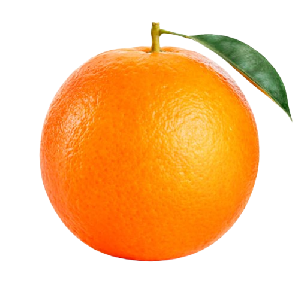

tentang buah.com - Jeruk

Jeruk

Apelmerupakan jenis buah-buahan, atau buah yang dihasilkan dari pohon apel. Buah apel biasanya berwarna merah kulitnya jika masak dan siap dimakan, tetapi bisa juga kulitnya berwarna hijau atau kuning. Kulit buahnya agak lembek dan daging buahnya keras. Buah apel memiliki beberapa biji di dalamnya.
Orang pertama kali menanam apel di Asia Tengah. Saat ini, apel tumbuh di berbagai daerah di dunia dengan suhu udara yang lebih dingin. Nama ilmiah pohon apel dalam bahasa Latin ialahMalus domestica. Apel budi daya adalah keturunan dari Malus sieversii asal Asia Tengah, dengan sebagian genom dariMalus sylvestris(apel hutan/apel liar).
Kebanyakan apel bagus dimakan mentah (tidak dimasak), dan juga digunakan banyak jenis makanan pesta. Apel dimasak sampai lembek untuk dibuat saus apel. Apel juga dibuat untuk menjadi minuman sari buah apel. Makanan yang terkenal berbahan dasar apel saat ini adalah Apple pie.
- meningkatkan daya memori
- baik untuk usus
- meningkatkan sistem kekebalan tubuh
- baik untuk jantung
- menurunkan tekanan darah
- mengurangi resiko diabetes
Daftar Harga
| jenis apel | Harga | |
|---|---|---|
| Perkilo | Perbiji | |
| Apel Manalagi | 50.000 | 5.000 |
| Apel Fuji | 60.000 | 6.000 |
| Apel Anna | 70.000 | 7.000 |
| Apel Merah | 50.000 | 5.500 |